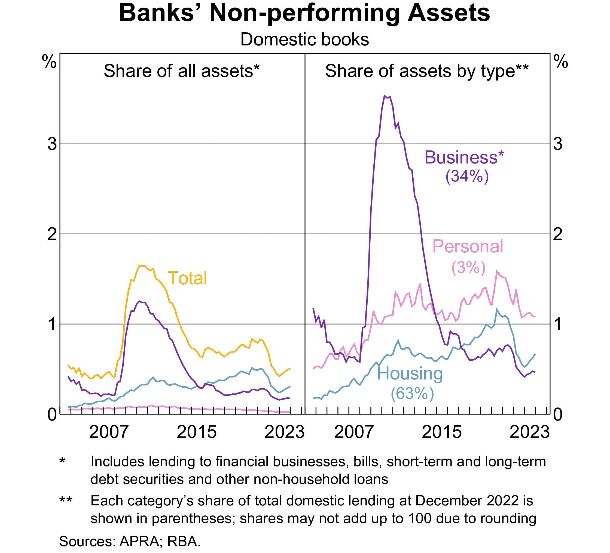

In Week 3, we discussed capital adequacy and the (Pillar 1 of Basel) minimum capital requirements, which involves the calculation of risk-weighted assets (RWA) that account for the various risks facing banks.
As suggested by Table 1 below, credit risk is likely the most significant risk factor, the risk that the promised cash flows from loans and securities may not be paid in full (e.g., borrower defaults).
Table 1: RWA of Australian banks in 2023 (source: Capital IQ)
CBA
Westpac
NAB
ANZ
Macquarie
RWA for credit risk
362,869
339,758
355,554
349,041
97,485
RWA for market risk
61,968
51,676
38,274
41,967
11,663
RWA for operational risk
43,155
55,175
41,178
42,319
15,828
Other RWA
0
4,809
0
0
0
Total RWA
467,992
451,418
435,006
433,327
124,976
FIs (banks) transform financial claims of household savers (e.g., deposits) into claims (e.g., loans) issued to corporations, individuals and governments.
FIs accept the credit risk on these loans in exchange for a fair return sufficient to cover the cost of funding to household savers and the credit risk involved in lending.
Introduction (cont’d)
This week:
approaches to analyzing and measuring the credit or default risk on individual loans (and bonds).
Next week (after mid-term exam):
methods for evaluating the risk of the overall loan portfolio, or loan concentration risk.
Measurement of the credit risk on individual loans or bonds is crucial if an FI manager is to
price a loan or value a bond correctly, and
set appropriate limits on the amount of credit extended to any one borrower or the loss exposure it accepts from any particular counterparty.
Importance of credit risk management
Credit risk management is important because it involves the determination of many features of a loan (debt) instrument: interest rate, maturity, collateral requirement, and covenants.
Inadequate credit risk management could lead to higher default rates and bank insolvency, especially when markets are competitive and margins are low.
Default of one major borrower can have significant impact on value and reputation of many FIs.
Direct impact on all lenders involved.
Contagion or spill-over effect on other FIs in the financial system.
Major economic or natural events can cause significant impact on many FIs loan portfolios.
The 2007-09 subprime mortgage crisis.
Floods, earthquakes, etc.
Credit risk-related events
Subprime mortgage crisis and the resulting GFC 2007-09.
Banks provided risky mortgages to subprime borrowers with poor credit.
A housing boom led to speculative investments and rising home prices.
Lenders bundled these mortgages into mortgage-backed securities (MBS) and sold them to investors.
Many loans had adjustable rates, which increased over time, causing payment difficulties.
Rising defaults led to a housing market collapse, triggering widespread financial losses.
Banks and investors holding MBS faced a credit crisis, leading to bank failures and liquidity issues.
Credit risk-related events (cont’d)
U.S. student loan debt and its future?
$1.73 trillion student loan debt as at September 2021, 7.8% is in default.
1 out of 10 Americans has defaulted on a student loan.
Personal consequences: homeownership, marriage, retirement savings, etc.
Economic burden: loan defaults can weigh down the entire country.
Banks in Australia: non-performing assets

Figure 1: Non-performing assets of banks in Australia
Types of loans
The loans made by FIs can be broadly categorized into:
Commercial and industrial (C&I) loans
Real estate loans
Consumer (individual) loans
Others
Types of loans: C&I loans
Commercial loans vary significantly in their features.
Maturity, from a few weeks to years.
Amount, from very small to millions or billions.
Syndicated or not.
A syndicated loan is one provided by a group of FIs as opposed to a single lender.
Secured or unsecured.
Spot loans vs loan commitment.
Spot loan: a loan in which the loan amount is withdrawn immediately by the borrower.
Loan commitment (or line of credit): a credit facility with a maximum size and a maximum period of time over which the borrower can withdraw funds.
Types of loans: real estate loans
Real estate loans include residential loans (primarily mortgage loans) and commercial real estate loans.
As with C&I loans, residential mortgages differ widely in their characteristics:
Loan size
LTV (loan-to-value ratio): the ratio of the loan to the property’s price
Maturity
Mortgage interest rates and fees: adjustable-rate mortgages (ARMs) and fixed-rate mortgages
Residential mortgages are typically very long-term loans with 20yrs+ maturity.
Housing price can fall below the loan amount, causing defaults and eventually foreclosures.
Types of loans: consumer loans
Consumer (personal) loans include, for example, personal and auto loans.
Credit cards are a type of consumer loan financing.
Types of loans: other loans
“Other loans” include a variety of borrowers and types, including for example
farmers
other banks
nonbank FIs (e.g., broker margin loans)
state and local governments
Returns on a loan
Calculating the return on a loan
Once the decision to make a loan has been made, the pricing of the loan is an important aspect of credit risk management, which includes adjustments for the perceived credit risk of the borrower as well as any fees and collateral backing the loan.
A traditional return on assets approach to calculate the return on a loan is explained here.
Contractually promised return on a loan
Factors affecting the promised loan return:
Loan interest rate
Credit risk premium
Fees
Collateral
Non-price terms
Contractually promised return on a loan (cont’d)
Suppose that an FI makes a spot one-year $1 million loan. The loan rate may be set as
The base lending rate (BR) reflects the FI’s weighted-average cost of capital (WACC) or its marginal cost of funds.
For example, LIBOR-the London Inter-Bank Offered Rate.
LIBOR manipulation scandal led to its phasing out and replacement by more transparent and reliable rates like SOFR-the Secured Overnight Financing Rate.
The base lending rate could also reflect the prime lending rate, the interest rate that commercial banks charge their most creditworthy and low-risk corporate customers.
Note
LIBOR/SOFR (BBSW) more commonly used for short-term loans, while prime rates more for long-term loans.
A credit risk premium is added to the base lending rate.
Contractually promised return on a loan (cont’d)
Direct and indirect fees and charges:
Loan origination fee (\(f\)) for processing the application.
Compensating balance requirement (\(b\)) to be held as (demand) deposits.
A portion of the loan that the borrower must keep in a deposit account, typically earning little or no interest, which helps the bank secure funds and reduce the effective loan amount while still charging interest on the full loan value.
Reserve requirement (\(RR\)) imposed by regulatory authority on the demand deposits.
Numeric example
If a borrower takes a loan of $100,000 but must maintain a compensating balance of 10%, they need to keep $10,000 in a non-interest-bearing deposit account with the bank. Thus, they effectively receive $90,000 but pay interest on the full $100,000.
The bank receives this $10,000 in deposits. Given a reserve requirement of 5%, the bank must keep \(\$10,000 \times 5\%=\$500\) in reserve (cash or deposits with the central bank).
Contractually promised return on a loan (cont’d)
The gross return on loan (\(k\)) per dollar lent is given by \[
1+k = 1+\frac{f+(BR+\phi)}{1-[b(1-RR)]}
\]
An annotated version of the formula
\[
1+k=1+\frac{\overbrace{f+(BR+\phi)}^{\text{interest and fees earned}}}{\underbrace{1}_{\$1 \text{ loan}}-[\underbrace{b}_{\text{amount of loan deposited with the bank}}\times \underbrace{(1-RR)}_{\text{not reserved for regulatory compliance}}]}
\]
For every $1 the FI lends, it retains \(b\) as compensating balance. The borrower receives \(1-b\).
Since \(b\) is held by the borrower at the FI as a demand deposit account, regulatory authority requires the bank to hold reserves at a rate \(RR\) against the compensating balance.
The net outflow by the bank per $1 of loans made is therefore \(1-[b(1-RR)]\), 1 minus the reserve-adjusted compensating balance requirement.
Contractually promised return on a loan (cont’d)
Suppose a bank does the following:
Sets the loan rate on a prospective loan at 10% (where \(BR\)=6% and \(\phi\)=4%)
Charges a 12.5 basis point (or 0.125%) loan origination fee \(f\) to the borrower
Imposes an 8% compensating balance requirement \(b\) to be held as non-interest-bearing demand deposits
Sets aside reserve, at a rate of 10% of deposits, held at the central bank (i.e. \(RR\) is 10%)
What is the contractually promised gross return on the loan? \[
\begin{aligned}
1+k &= 1+\frac{f+(BR+\phi)}{1-[b(1-RR)]} \\
1+k &= 1+\frac{0.00125+(0.06+0.04)}{1-[0.08(1-0.1)]} \\
1+k &= 1+\frac{0.10125}{0.928} \\
k &= 10.91\%
\end{aligned}
\]
As commercial lending markets have become more competitive, both origination fees (\(f\)) and compensating balances (\(b\)) are becoming less important.
As a result, the credit risk premium (\(\phi\)) is the primary determinant for the promised return of a loan, once the base rate is set.
Note
To achieve a target promised gross return (\(k\)) on a loan, an FI can use various combinations of fees, compensation balances, and risk margins.
The expected return on a loan
The promised return on a loan (\(k\)) can differ from the expected return and the actual return on the loan because of default risk.
At the time the loan is made, the expected return \(E(r)\) per dollar lent is related to the promised return \(k\) as follows: \[
1+E(r) = p(1+k) + (1-p)\times 0
\] where \(p\) is the probability of complete repayment of the loan and \((1-p)\) is the probability of default, in which case the FI receives nothing.1 The expected return is a weighted average of:
Full repayment: \((1+k)\) with probability of \(p\)
No repayment: 0 with probability of \((1-p)\)
If \(p<1\):
Default risk exists
FI needs to set risk premium
FI needs to recognize that higher fees and charges might decrease \(p\)
The expected return on a loan (cont’d)
Suppose a bank does the following:
Sets the loan rate on a prospective loan at 10%
Expects a probability of default of 5%
Recovers nothing if the loan is defaulted
What is the expected return on the loan?
The probability of default \((1-p)=0.05\); loan rate is 10%. \[
\begin{aligned}
1+E(r) &= p(1+k) = (1-0.05)(1+0.1) = 1.045 \\
E(r) &= 0.045
\end{aligned}
\] Expected return on this loan is 4.5%.
Some notes
FIs usually control credit risk along two dimensions:
the price or promised return dimension, and
the quantity or credit availability dimension.
The quantity dimension applies more in retail (e.g., consumer) loans.
The price dimension applies more in wholesale (e.g., C&I) loans.
Retail vs wholesale credit decisions
Retail
Retail loans to household borrowers (consumers) tend to have smaller size and higher costs of information collection, and as a result, retail lending decisions tend to be “accept or reject” decisions.
Borrowers of a similar loan product, regardless of their credit risk, are often charged the same credit risk premium.
Retail customers are more likely to be sorted or rationed by loan quantity restrictions than by price (interest rate) differences.
In finance words, an FI controls its credit risk at the retail level by credit rationing.
Note
Residential mortgages are a good example. Two mortgage borrowers may pay the same mortgage rate while their LTVs are different.
Wholesale
At the wholesale (C&I) level, FIs use both interest rates and credit quantity to control credit risk.
As long as they are compensated with sufficiently high credit risk premium, FIs may be willing to lend to high-risk wholesale borrowers.
However, higher interest rates may increase the probability of borrower’s default, reducing expected return.
Note
Another important consideration is that only high-risk borrowers may be willing to borrow at high interest rates. This is an “adverse selection” problem.
As a result, FIs may credit ration its wholesale loans beyond certain interest rate level. That is, the FI can establish an upper ceiling on the amount of loan it is willing to lend.
Tip
Sometimes, an FI can achieve a higher expected return on its loan portfolio if it cuts its loan rates.
Measurement of credit risk
It is all about information
To calibrate the credit risk exposure, FIs need to estimate the borrower’s default probability, which largely depends on their ability to collect and analyze information, cost-efficiently.
At the retail level, such information may be collected internally (e.g., past banking records) or externally (e.g., credit reports from rating agencies).
There are three main credit reporting bodies in Australia: Equifax, illion and Experian
At the wholesale level, such information comes from multiple sources:
Large, public firms: financial statements, stock and bond prices, analysts’ reports, etc.
Advances in technologies make it easier to collect and analyze information of smaller borrowers.
Protection against credit risk
Loan covenants are often used mitigate credit risk. Covenants are loan contract terms that restrict or encourage various actions to enhance the probability of repayment.
For example, covenants may limit the type and amount of new debt, investments, and asset sales the borrower can undertake while the loan is outstanding.
Financial covenants may restrict changes in the borrower’s financial ratios such as leverage or current ratio.
Assume a prospective borrower has a \(D/E\) of 0.3 and an \(S/A\) of 2. Its estimated default probability is \[
PD = 0.5\times 0.3 - 0.0525 \times 2 = 0.045
\]
Credit scoring: logit models
Caution
Linear probability model has a weakness being that the estimated probability may be smaller than 0 or larger than 1. This can be addressed by the logit model.
Essentially, this is done by plugging the estimated value of \(PD\) from the linear probability model (in previous example, \(PD=0.045\)), into the following formula:
\[
F(PD) = \frac{1}{1+e^{-PD}}
\] where \(F(PD)\) is the logistically transformed value of \(PD\).
Other alternatives include Probit and other variants with nonlinear indicator functions.
Credit scoring: linear discriminant analysis
Linear probability and logit models estimate a default probability (a value from 0 to 1) if a loan is made.
Discriminant models divide borrowers into high/low default risk classes based on observed characteristics.
Altman’s Z score model for manufacturing firms:
\[
Z = 1.2 X_1 + 1.4 X_2 + 3.3 X_3 + 0.6 X_4 + 1.0 X_5
\] where
\(X_1 = \text{Working capital / Total assets}\).
\(X_2 = \text{Retained earnings / Total assets}\).
\(X_3 = \text{Earnings before interest and taxes / Total assets}\).
\(X_4 = \text{Market value of equity / Book value of total liabilities}\).
\(X_5 = \text{Sales / Total assets}\).
The classification:
High default risk: \(Z<1.81\)
Indeterminant defaualt risk: \(1.81<Z<2.99\)
Low default risk: \(Z>2.99\)
Weaknesses of credit scoring models
Weights in any credit scoring model unlikely to be constant over longer periods of time
Variables in any credit scoring model unlikely to be constant over longer periods of time
Models ignore hard-to-quantify factors such as borrower reputation
There is no centralised database on defaulted business loans for proprietary or other reasons
Discriminant models make broad distinction between borrower categories, that is, good and bad borrowers, yet in the real world various gradations of default exist, from non-payment or delay of interest payments (nonperforming assets) to outright default on all promised interest and principal payments
…
Newer models of credit risk measurement and pricing
Newer credit risk models use finance theory and more widely available financial market data to make inference about default probabilities on debt and loan instruments.
A lot of research is taking place and we consider a number of these newer approaches here, including
Term structure of credit risk approach (also called reduced-form models)
Mortality rate derivation of credit risk
RAROC
Option models (also called structural models since they are based on an economic model of why firms default)
Term structure derivation of credit risk
A simple key idea: extract the expected default rates from the current term structure of interest rates.
A risk-neutral FI would be indifferent between investing in a risk-free government bond and a risky corporate loan/bond.
where \(\gamma\) is the recovery rate if the loan defaults.
We can set \(p(1+k)+(1-p)(1+k)\gamma = 1 + i\) and compute the risk-neutral default probability\((1-p)\).
May be generalised to loans with any maturity or to adjust for varying default recovery rates.
The loan can be assessed using the inferred probabilities from comparable quality bonds.
Mortality rate derivation of credit risk
Rather than extracting expected default rates from the current term structure of interest rates, the probability of default is estimated from past data on defaults, similar to the process employed by insurance companies to price policies.
Tip
Insurance companies do not estimate an individual’s future health condition, but rather, use historic data to statistically examine a pool of people with similar characteristics (e.g., age, gender, medical history) to calculate the probability of mortality or other health-related risks over time.
For example, for grade B bonds, the marginal mortality rate (MMR) for the first year of issue is \[
MMR_1 = \frac{\text{Total value of grade B bonds default in year 1 of issue}}{\text{Total value of grade B bonds outstanding in year 1 of issue}}
\] We can similarly construct \(MMR_2\), \(MMR_3\), …, and construct a MMR curve.
Mortality rate approach has a number of conceptual and applicability problems.
Historic, backward-looking, sensitive to the period chosen for analysis.
RAROC
Risk-adjusted return on capital (RAROC) was pioneered by Bankers Trust (acquired by Deutsche bank in 1998).
\[
RAROC = \frac{\text{One-year net income on a loan}}{\text{Loan risk}}
\] where \[
\text{One-year net income on loan} = (\text{Spread} + \text{Fees}) \times \text{Dollar value of the loan outstanding}
\] and Loan risk can be measure by, for example, duration. \[
\frac{\Delta LN}{LN} = - D_{LN} \frac{\Delta R}{1+R}
\] so that \[
\underbrace{\Delta LN}_{\text{dollar risk exposure}} = - \underbrace{D_{LN}}_{\text{duration of loan}} \times \underbrace{LN}_{\text{loan amount}} \times \underbrace{\frac{\Delta R}{1+R}}_{\text{shock}}
\]
Loan approval if RAROC > benchmark return on capital.
Option models of default risk
Rationale:
A borrower borrows to invest.
If its investments are successful, the borrower repays.
If its investments fail and the borrower cannot repay the lender,
The borrower has an option to default on its debt, simply turning any remaining assets over to the lender.
The borrower’s (equity holders’) loss is capped due to limited liability.
Note
The KMV Corporation1 turned this relatively simple idea into a credit monitoring model.
Many of the largest U.S. FIs are now using this model to determine the expected default frequency (EDF) of large corporations.
Option models of default risk (cont’d)
We can use option pricing models like Merton (1974) and Black and Scholes (1973) to estimate default probability. The option valuation models can also be applied to calculate the default risk premium.
Merton (1974) shows that the market value of risky loan made by a lender to a borrower is
\[
L(\tau) = B e^{-i\tau} [(1/d) N(h_1) + N(h_2)]
\] where
\(\tau\) is the time remaining to loan maturity
\(i\) is the risk-free rate
\(d\) is the borrower’s leverage ratio measured as \(B e^{-i\tau} / A\), where \(A\) is assets’ value
\(N(\cdot)\) is the cumulative normal distribution function
\(\sigma^2\) measures the asset risk of the borrower, which is the variance of the rate of change in the value of the underlying assets of the borrower
The equilibrium default risk premium (\(\phi\)) that the borrower should be charged is
RMA provides average balance sheet and income data for more than 400 industries, common ratios computed for each size group and industry, five-year trend data, and financial statement data for more than 100,000 commercial borrowers.
If you’re into Math and would like to see some code,
Black, Fischer, and Myron Scholes. 1973. “The Pricing of Options and Corporate Liabilities.”Journal of Political Economy 81 (3): 637–54. http://www.jstor.org/stable/1831029.